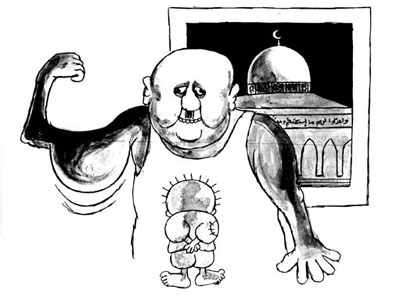

Residency Rights: International Law The systematic revocation of the right to reside in Jerusalem of over 4,000 Palestinian residents is contrary to international law, particularly the laws of belligerent occupation.
Article 49 of the Fourth Geneva Convention of 1949 explicitly states that "individual or mass forcible transfers, as well as deportations of protected persons from occupied territory to the territory of that of the occupying power or to that of any other country are prohibited regardless of motive."
Article 13(2) of the Universal Declaration of Human Rights states "everyone has the right to leave any country, including his own, and to return to his country." Israel is obliged as the occupying power to abide by all the stipulations of international humanitarian law applicable to territories under belligerent occupation.
Despite the Israeli annexation, international law recognizes East Jerusalem as occupied territory in the same way that the rest of the West Bank, the Gaza Strip, the Golan Heights and the Southern Lebanon "security zone" are occupied territories. Similarly, international law experts also maintain that, in the case of annexation, peoples of annexed territories should be given citizenship automatically by the annexing state; it is not the obligation of an annexed people to request citizenship.
The Israeli government, however, had no intention of registering tens of thousands of new Palestinian citizens of Israel. This follows from the aim of all Israeli governments, and that of the Zionist leadership before it, to increase the number and proportion of Jews living in Palestine/Israel and to decrease the proportion, and the number, of Palestinians. Therefore, the Israeli government made East Jerusalem Palestinians a standing offer of citizenship. In this way the government effectively put the ball in the East Jerusalemites' court knowing that they would not return it, because if they were to request Israeli citizenship it could be interpreted as an acquiescence to annexation. Furthermore, East Jerusalemites have no desire to be a part of Israel in which, by its praxis an definition as a Jewish state, they would be, at most, second-class citizens.
Since 1967, East Jerusalem residents have fought hard against Israeli control and against Israel's attempt to sever them from the rest of the West Bank, in anticipation of a Palestinian state, and to maintain their separation from the Israeli state, East Jerusalem Palestinians are forced into daily contact with Israeli government clerks, police officers and soldiers. However, just as Israel separated Palestinians who found themselves inside the 1948 borders from the rest of Palestine, the Israeli government has "closed off" East Jerusalem from the rest of the West Bank.
Permanent Residency of East Jerusalem residents
After the Israeli annexation the government conducted a census, which recorded 66,000 Palestinians living in East Jerusalem. 44,000 people were living in what had been, before 1967, East Jerusalem. The other 22,000 were living in the rest of the area that was annexed by Israel. These 66,000 people were classified as Permanent Residents of Jerusalem. Any East Jerusalem resident who was not recorded in the census was required, in order to legally reside in their home, to submit an application for family reunification to the Ministry of Interior. Until this day, any Palestinian who is not classified by the Israeli government as a Permanent Resident of East Jerusalem - including spouses, children and other relatives of East Jerusalem Permanent Residents - must apply for family reunification to legally reside there. The decision to grant or to deny these applications is, according to Israeli law, ultimately at the discretion of the Interior Ministry, who is not required to justify refusal of a request for family reunification.
Internationally, Permanent Residency is usually the status given by a state to foreigners who decide, and are permitted, to permanently reside in that state. Permanent Residency is also frequently a transitional status from non-citizen to citizen. This status assumes that the person is a citizen of, and his or her home is in, another country. Obviously, this is not the case of Palestinians of East Jerusalem; Jerusalem is their present-day and their ancestral home. In contrast, almost any Jew from anywhere in the world can enter Israel and, under the Law of Return, automatically become an Israeli citizen.
Palestinians who were subjects of the former Jordanian administration of the West Bank, including East Jerusalem, hold Jordanian passports. Many Jewish Israelis hold this fact up as evidence that Palestinians' national home is Jordan, and as justification for treating them as guest workers, denying their civil rights, and even deporting them. In part to discourage this Israeli point of view, late King Hussein of Jordan severed administrative ties with the West Bank in 1988.
As Permanent Residents, Palestinian East Jerusalemites do not have rights under law which are equal to those held by Israeli citizens, but are still subjected to Israeli administration, laws and taxes. Permanent Residents cannot vote in national elections, nor may they work in many government positions. They are supposedly entitled to receive National Insurance benefits - a right which is, more often than not, a struggle.
By classifying East Jerusalem residents as Permanent Residents the Israeli government has tried to project a semblance of legality on the annexation; at the same time the government has denied these same residents their civil, political and human rights. Among the rights that East Jerusalem residents are denied is their right to residency and family unity.
Jerusalem Residents who are separated from their families as a result of the 1967 war
PROBLEM: Tens of thousands of Palestinians and their families, separated from East Jerusalem as a result of the 1967 war, have been, and are still being, denied the right to return and live in their homes.
INTERNATIONAL LAW: By denying and hindering the repatriation of Palestinians who were dispersed as a result of the 1967 war (and the 1948 war), Israel contravenes article 74 of protocol 1 of the 1977 addendum to the Fourth Geneva Convention:
"The High Contracting Parties and Parties to the conflict shall facilitate in every possible way the reunion of families dispersed as a result of armed conflicts and shall encourage in particular the work of the humanitarian organisations engaged in this task in accordance with the provisions of this Protocol and in conformity with their respective security regulations."
East Jerusalem Permanent Residents who travel, or attempt to travel, abroad
(a) Revocation of Permanent Residency according to regulation 11
LAW: Regulation 11 of The Law of Entry to Israel states that:
If a Permanent Resident:
- lives outside of Israel (including East Jerusalem) for more than seven years
- becomes a permanent resident of another country
- applies for citizenship in another country.
He/she is liable to lose his/her status as a Permanent Resident of Israel.PROBLEM: The Israeli government has used regulation 11 to prevent thousands of Palestinians from Jerusalem from living in their homeland. The conditions in regulation 11 have no bearing on the intention of a person to return to his/her home, a fact of which the Israeli government is very aware: Jewish Israelis have no limitations on the length of time they may stay abroad or in regards to acquiring dual citizenship. Many Palestinians travelling abroad are not aware of these conditions on their East Jerusalem residency, and only hear about them after their Jerusalem ID's have been revoked.
INTERNATIONAL LAW: Universal Declaration of Human Rights
Article 12: "1. Everyone lawfully within the territory of a state shall, within that territory, have the right to liberty of movement and freedom to choose his [sic] residence; 4. No one shall be arbitrarily deprived of the right to enter his own country."
Article 13: "2. Everyone has the right to leave any country, including his own, and to return to his country"
Conclusions
East Jerusalem Palestinians find themselves in a dual role, both of which they are trying to cast off. Firstly, they are part of the West Bank population under Israeli military occupation. Secondly, they are part of the Israeli state, although Israel is the only party which believes that this is an official, and permanent, state of affairs. Both roles subject them to repression and discrimination without due process of law. Similarly, both roles contribute to violations of their rights of residency and family unity. As regards these rights, it is the role as part of the Israeli state that is likely to plague East Jerusalem Palestinians for the foreseeable future; because the realization of these rights is diametrically opposed to Israel's policies and plans. The fulfillment of these basic rights would necessitate the repatriation and return to Jerusalem of many thousands of Palestinians who are currently residing in the rest of the West Bank, the Gaza Strip, and abroad. It would also entail the natural and unimpeded growth of the city as the center of Palestine. Israel's designs on East Jerusalem, as its eternal capital, compel the reverse situation: limiting the Palestinian population, while continuing the rapid settlement of Jews.
No doubt, Israel's vision is to subdue East Jerusalem Palestinians as a minority of Israeli Greater Jerusalem, much as it attempted to do with the Palestinian community that remained within its borders after 1948. While it might start to release (at least internal) control over the population in the Gaza Strip and the rest of the West Bank, Israel is tightening its grip on East Jerusalem.
As such, Palestinian families in East Jerusalem are falling victim to the demographic war Israel has waged on their home. The various bureaucratic procedures are part of Israel's tools for both limiting East Jerusalem's Palestinian population and for separating its families. The conclusion is clear: only when East Jerusalem will be an integral, and central, part of a free Palestinian state will the Palestinians who live there be able to fully realise their rights of residency and family unity.
Urgent Issues of Family Residency in Jerusalem, An earlier study by BADIL which examines the legal obstacles which prevent Palestinian families from living together in Jerusalem.